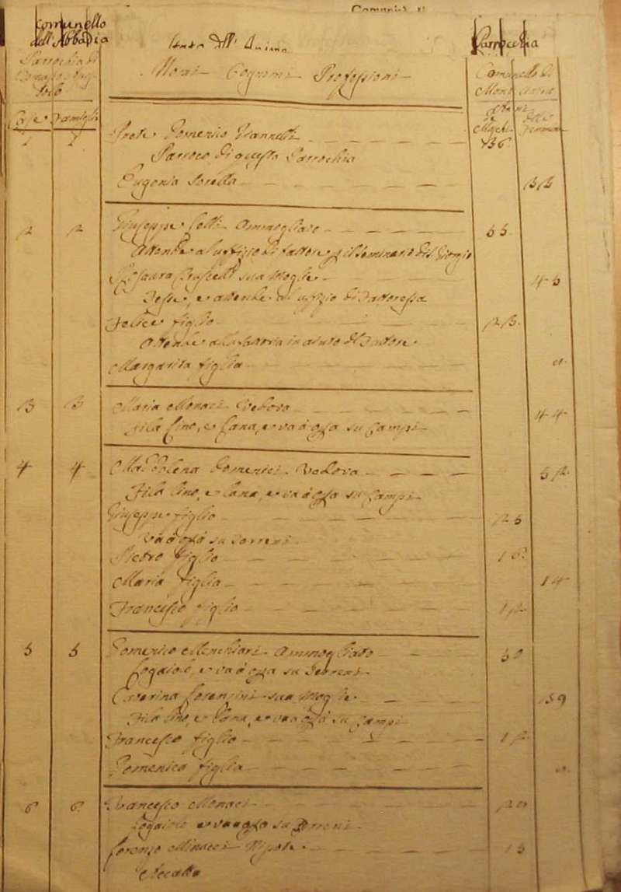
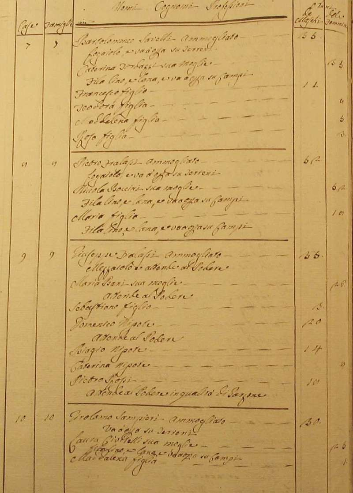
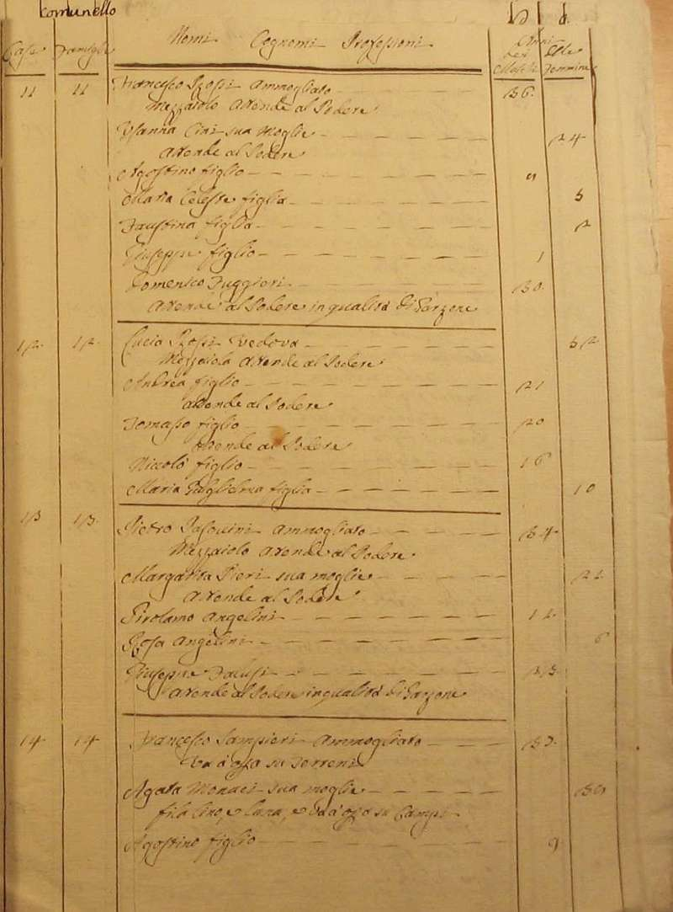
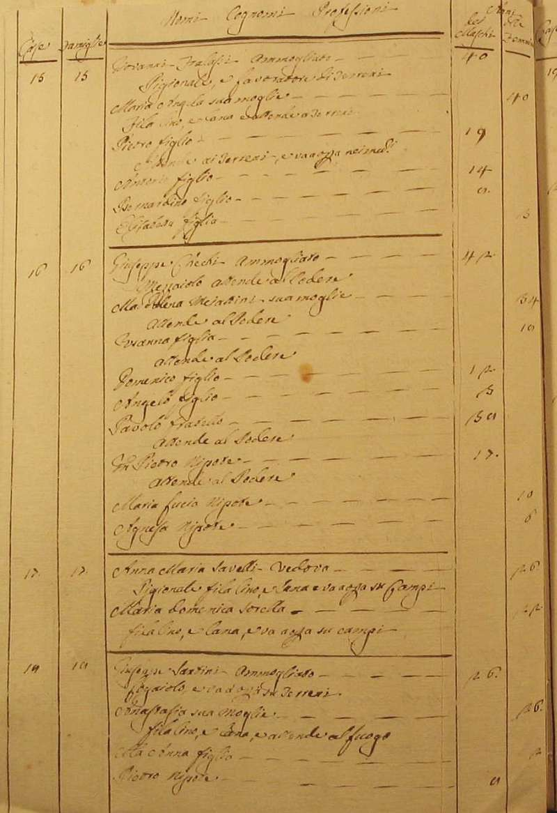
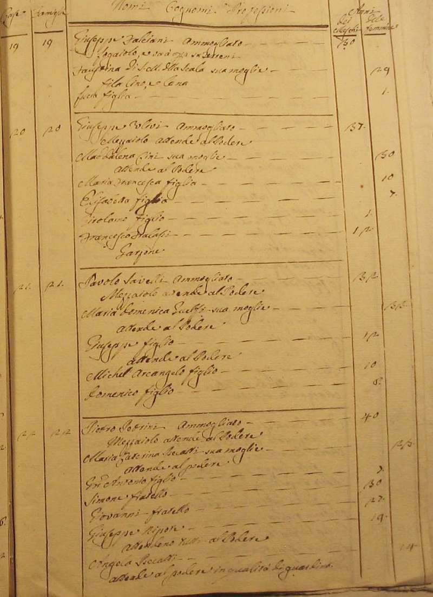
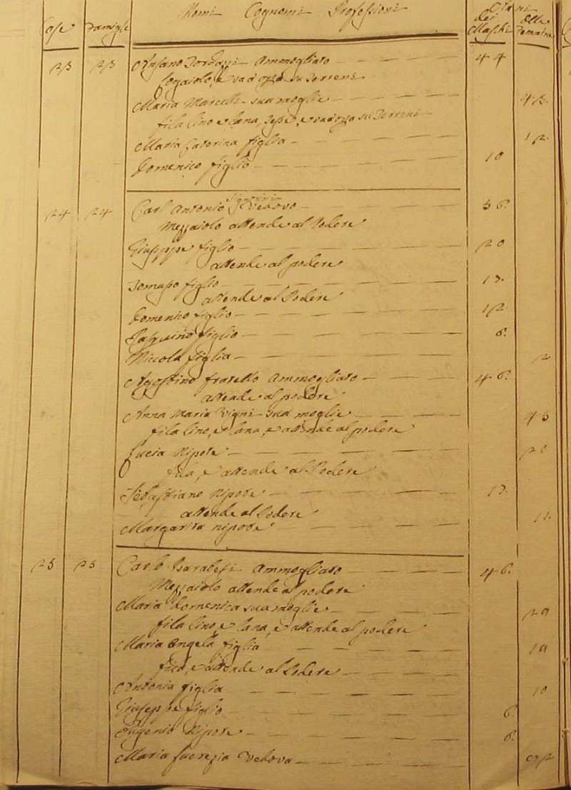
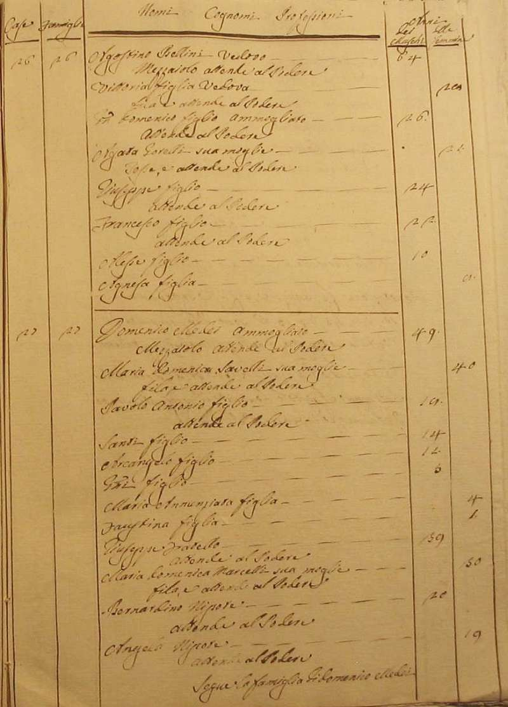
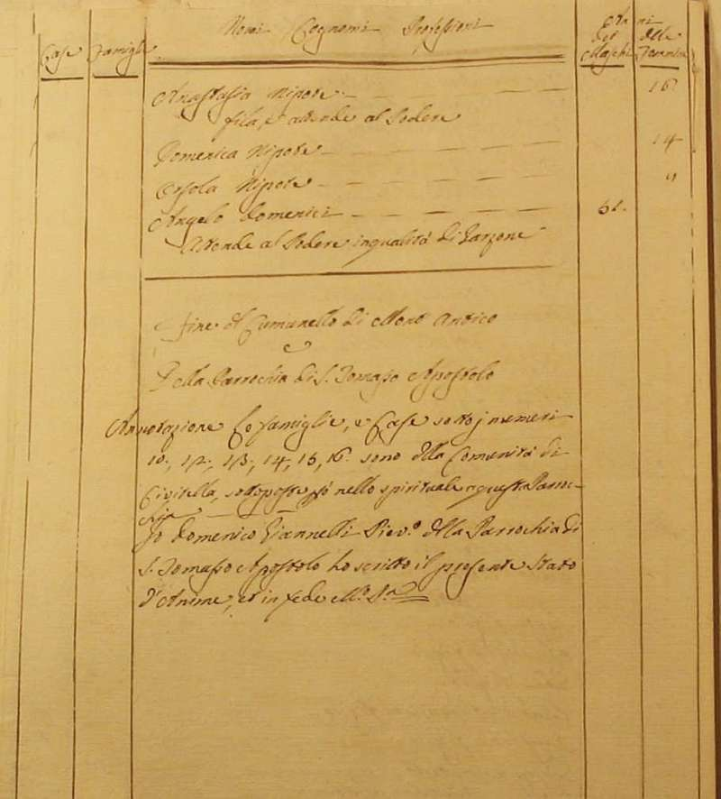

|
Ritorna all'indice delle parrocchie
Il numero abbinato ad ogni famiglia indica la relativa posizione nello Stato delle Anime
1 - Prete Domenico Giannelli - Parroco di questa Parocchia
2 - Lelli Giuseppe - attende all'uffizio di fattore per il seminario di S. Giorgio - 4
3 - Monaci Maria - vedova - fila lino e lana e va a opera sui campi
4 - Domenici Maddalena - vedova - fila lino e lana e va a opera su campi
5 - Domenico Menchiari - logaiolo e va a opera su terreni
6 - Francesco Monaci - logaiolo e va a opera su terreni
7 - Savelli Bartolomeo - logaiolo e va a opera su terreni
8 - Fralassi Pietro - logaiolo e va a opera su terreni
9 - Fralassi Giuseppe - mezzaiolo e attende al podere
10 - Sampieri Giuseppe - va a opera su terreni
11 - Rossi Francesco - mezzaiolo attende al podere
12 - Rossi Lucia - vedova - mezzaiola attende al podere
13 - Pasquini Pietro - mezzaiolo attende al podere
14 - Sampieri Francesco - va a opera su terreni
15 - Fralassi Giovanni - pigionale e lavoratore di terreni
16 - Chechi Giuseppe - mezzaiolo attende al podere
17 - Savelli Anna Maria - vedova - pigionale fila lino e lana e va a opera sui campi
18 - Santini Giuseppe - logaiolo e va a opera su terreni
19 - Falciani Giuseppe - logaiolo e va a opera su terreni
20 - Ulivi Giuseppe - mezzaiolo attende al podere
21 - Savelli Paolo - mezzaiolo attende al podere
22 - Petrini Pietro - mezzaiolo attende al podere
23 - Tordani Ansano - logaiolo e va a opera su terreni
24 - Signorini Carlo Antonio - mezzaiolo attende al podere
25 - Barabesi Carlo - mezzaiolo attende al podere
26 - Bellini Agostino - mezzaiolo attende al podere
27 - Medei Domenico - mezzaiolo attende al podere - 16








Torna ad inizio pagina
Ritorna all'indice delle parrocchie
| |

|